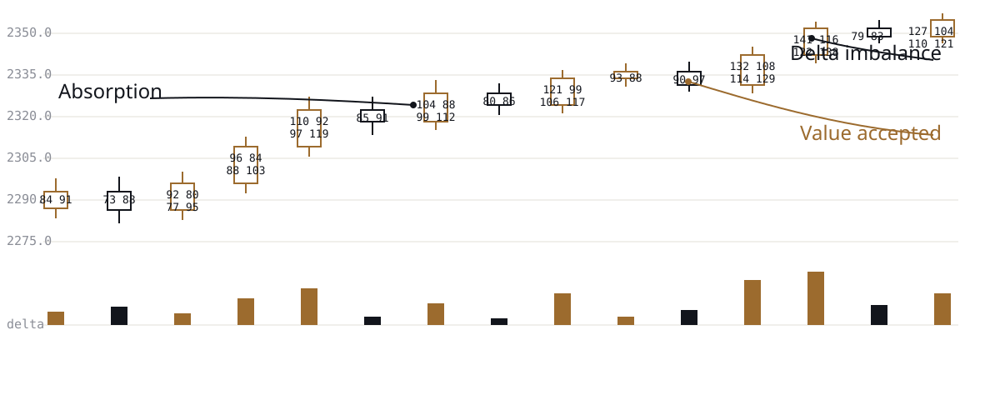

The way institutions read markets, now taught directly to retail traders
For decades, that knowledge stayed inside trading desks and proprietary firms. Retail traders got indicators, candlestick patterns, and signals instead. The Art of Making Wealth closes that gap directly, one student at a time, through TradeSchool.
Book a one-on-one session
If this sounds familiar
You've taken a trade that looked exactly like the one that worked last week, and watched it fail anyway. You've added another indicator hoping it would finally remove the guesswork. You've sat through hours of recorded classes and could recite three or four named strategies, and you still couldn't explain, out loud, in real time, why a candle just did what it did.
None of that means you're bad at this. It means you were taught to follow signals instead of understand a market, and the gap between those two only becomes visible once it has already cost you money.
You're not the only one it's cost.
The numbers behind that feeling
SEBI's own research: roughly 91% of individual traders in equity derivatives lost money in FY2024-25, around ₹1.056 lakh crore in aggregate net losses for the year. The prior study, covering FY2022 through FY2024, found 93% of individual F&O traders lost money, over ₹1.8 lakh crore in total. A separate study on intraday cash trading found 7 out of 10 individual traders lost money there too.
That's not a scare number meant to sell you something. It's the regulator's own data, and it says what your own experience may already have told you: knowing how to place a trade isn't the same thing as understanding a market.
91%
93%
7 in 10
Sources: SEBI studies published July 2024, September 2024, and July 2025.
Why this keeps happening
Most stock market education in India, especially in Kerala, follows the same shape: a batch of students, a recorded video, an indicator, a signal, a certificate. Nobody in that room learns to read a market. They learn to follow one person's rules until the market changes character and the rules stop working, and then nobody in the room knows why.
We think that's close to indefensible for what people pay to learn it, and we built something else on purpose. More on exactly how, on the Why we're different page.
What we teach instead
Institutions don't trade off indicators. They read auction behavior: who's participating, where value is being accepted, where liquidity sits, who's trapped, what the order flow shows underneath the candle. That's the Market Intelligence Framework, an eleven-level curriculum that takes a student from how a market physically works to independent professional research, and it's the actual core of what The Art of Making Wealth teaches. Full breakdown on the The curriculum page.
What we refuse to promise you
No guaranteed returns. No fixed win rate. No secret indicator. No magic setup. No promise that any strategy works in every market condition. Anyone who has genuinely traded knows why: markets don't owe anyone certainty, and a course that implies otherwise is selling a story, not an education.
What we teach instead is harder to put on a banner and worth far more: the ability to reason clearly when certainty isn't available.
Who this is for
Built for people who want real market education instead of another shortcut strategy, who are tired of jumping from indicator to indicator, and who are willing to study rather than just consume content.
Not built for people who want guaranteed returns, instant calls, or an education that promises to remove uncertainty rather than teach them to work inside it.
Every student gets one dedicated mentor for the length of their training, live sessions only, no fixed end date. That's also why seats stay limited. When a mentor's time goes to their existing students, there isn't extra left over to sell to new ones. Full model on the Why we're different page.
Start the mentorship
TradeSchool doesn't run on batches or intake deadlines, and it isn't trying to be the biggest name in this industry. Mentorship begins when you're ready to commit to it.
Book a one-on-one sessionUnderstand the market. Build your own intelligence. Trade with reason.